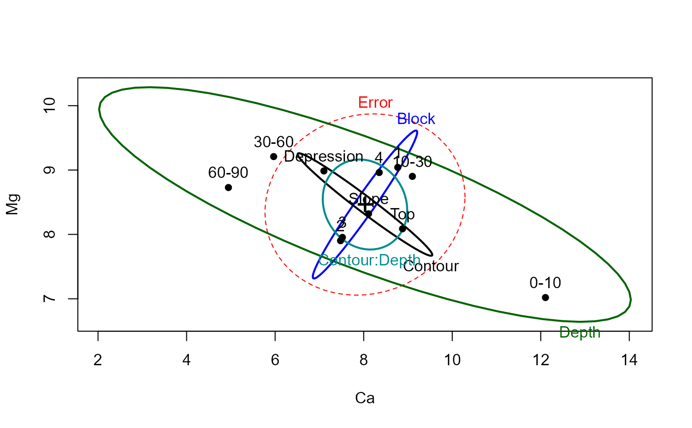
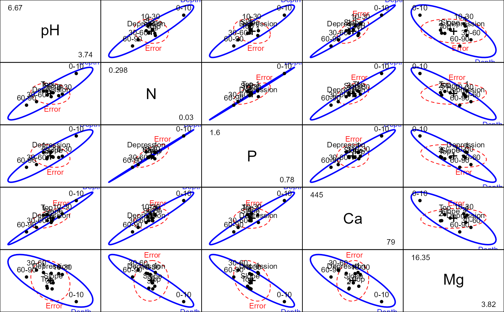

This function plots ellipsoids in 3D representing the hypothesis and error sums-of-squares-and-products matrices for terms and linear hypotheses in a multivariate linear model.
Usage
heplot3d(mod, ...)
# S3 method for class 'mlm'
heplot3d(
mod,
terms,
hypotheses,
term.labels = TRUE,
hyp.labels = TRUE,
err.label = "Error",
variables = 1:3,
error.ellipsoid = !add,
factor.means = !add,
grand.mean = !add,
remove.intercept = TRUE,
type = c("II", "III", "2", "3"),
idata = NULL,
idesign = NULL,
icontrasts = c("contr.sum", "contr.poly"),
imatrix = NULL,
iterm = NULL,
manova,
size = c("evidence", "effect.size", "significance"),
level = 0.68,
alpha = 0.05,
segments = 40,
col = getOption("heplot3d.colors", c("red", "blue", "black", "darkgreen", "darkcyan",
"magenta", "brown", "darkgray")),
lwd = c(1, 4),
shade = TRUE,
shade.alpha = 0.2,
wire = c(TRUE, FALSE),
bg.col = c("white", "black"),
fogtype = c("none", "exp2", "linear", "exp"),
fov = 30,
offset = 0.01,
xlab,
ylab,
zlab,
xlim,
ylim,
zlim,
cex.label = 1.5,
add = FALSE,
verbose = FALSE,
warn.rank = FALSE,
...
)Arguments
- mod
a model object of class
"mlm".- ...
arguments passed from generic.
- terms
a logical value or character vector of terms in the model for which to plot hypothesis matrices; if missing or
TRUE, defaults to all terms; ifFALSE, no terms are plotted.- hypotheses
optional list of linear hypotheses for which to plot hypothesis matrices; hypotheses are specified as for the
linearHypothesisfunction in thecarpackage; the list elements can be named, in which case the names are used.- term.labels
logical value or character vector of names for the terms to be plotted. If
TRUE(the default) the names of the terms are used; ifFALSE, term labels are not plotted.- hyp.labels
logical value or character vector of names for the hypotheses to be plotted. If
TRUE(the default) the names of components of the list of hypotheses are used; ifFALSE, hypothesis labels are not plotted.- err.label
Label for the error ellipse
- variables
indices or names of the three response variables to be plotted; defaults to
1:3.- error.ellipsoid
if
TRUE, plot the error ellipsoid; defaults toTRUE, if the argumentaddisFALSE(see below).- factor.means
logical value or character vector of names of factors for which the means are to be plotted, or
TRUEorFALSE; defaults toTRUE, if the argumentaddisFALSE(see below).- grand.mean
if
TRUE, plot the centroid for all of the data; defaults toTRUE, if the argumentaddisFALSE(see below).- remove.intercept
if
TRUE(the default), do not plot the ellipsoid for the intercept even if it is in the MANOVA table.- type
“type” of sum-of-squares-and-products matrices to compute; one of
"II","III","2", or"3", where"II"is the default (and"2"is a synonym).- idata
an optional data frame giving a factor or factors defining the intra-subject model for multivariate repeated-measures data. See Details of
Anovafor an explanation of the intra-subject design and for further explanation of the other arguments relating to intra-subject factors.- idesign
a one-sided model formula using the “data” in idata and specifying the intra-subject design for repeated measure models.
- icontrasts
names of contrast-generating functions to be applied by default to factors and ordered factors, respectively, in the within-subject “data”; the contrasts must produce an intra-subject model matrix in which different terms are orthogonal. The default is c("contr.sum", "contr.poly").
- imatrix
In lieu of
idataandidesign, you can specify the intra-subject design matrix directly viaimatrix, in the form of list of named elements. Each element gives the columns of the within-subject model matrix for an intra-subject term to be tested, and must have as many rows as there are responses; the columns of the within-subject model matrix for different terms must be mutually orthogonal.- iterm
For repeated measures designs, you must specify one intra-subject term (a character string) to select the SSPE (E) matrix used in the HE plot. Hypothesis terms plotted include the
itermeffect as well as all interactions ofitermwithterms.- manova
optional
Anova.mlmobject for the model; if absent a MANOVA is computed. Specifying the argument can therefore save computation in repeated calls.- size
how to scale the hypothesis ellipse relative to the error ellipse; if
"evidence", the default, the scaling is done so that a “significant” hypothesis ellipse at levelalphaextends outside of the error ellipse.size = "significance"is a synonym and does the same thing. If"effect.size", the hypothesis ellipse is on the same scale as the error ellipse.- level
equivalent coverage of ellipse (assuming normally-distributed errors). This defaults to
0.68, giving a standard 1 SD bivariate ellipse.- alpha
significance level for Roy's greatest-root test statistic; if
size="evidence"orsize="significance", then the hypothesis ellipse is scaled so that it just touches the error ellipse at the specified alpha level. A larger hypothesis ellipse somewhere in the space of the response variables therefore indicates statistical significance; defaults to0.05.- segments
number of segments composing each ellipsoid; defaults to
40.- col
a color or vector of colors to use in plotting ellipsoids; the first color is used for the error ellipsoid; the remaining colors — recycled as necessary — are used for the hypothesis ellipsoid. A single color can be given, in which case it is used for all ellipsoid. For convenience, the default colors for all heplots produced in a given session can be changed by assigning a color vector via
options(heplot3d.colors=c(...). Otherwise, the default colors arec("pink", "blue", "black", "darkgreen", "darkcyan", "magenta", "brown", "darkgray").- lwd
a two-element vector giving the line width for drawing ellipsoids (including those that degenerate to an ellipse) and for drawing ellipsoids that degenerate to a line segment. The default is
c(1, 4).- shade
a logical scalar or vector, indicating whether the ellipsoids should be rendered with
shade3d. Works likecol, except thatFALSEis used for any 1 df degenerate ellipsoid.- shade.alpha
a numeric value in the range [0,1], or a vector of such values, giving the alpha transparency for ellipsoids rendered with
shade=TRUE.- wire
a logical scalar or vector, indicating whether the ellipsoids should be rendered with
wire3d. Works likecol, except thatTRUEis used for any 1 df degenerate ellipsoid.- bg.col
background colour,
"white"or"black", defaulting to"white".- fogtype
type of “fog” to use for depth-cueing; the default is
"none". Seebg.- fov
field of view angle; controls perspective. See
viewpoint.- offset
proportion of axes to off set labels; defaults to
0.01.- xlab
x-axis label; defaults to name of the x variable.
- ylab
y-axis label; defaults to name of the y variable.
- zlab
z-axis label; defaults to name of the z variable.
- xlim
x-axis limits; if absent, will be computed from the data.
- ylim
y-axis limits; if absent, will be computed from the data.
- zlim
z-axis limits; if absent, will be computed from the data.
- cex.label
text size for ellipse labels
- add
if
TRUE, add to the current plot; the default isFALSE. IfTRUE, the error ellipsoid is neither plotted nor returned in the output object.- verbose
if
TRUE, print the MANOVA table and details of hypothesis tests; the default isFALSE.- warn.rank
if
TRUE, do not suppress warnings about the rank of the hypothesis matrix when the ellipsoid collapses to an ellipse or line; the default isFALSE.
Value
heplot3d invisibly returns a list containing the bounding
boxes of the error (E) ellipsoid and for each term or linear hypothesis
specified in the call. Each of these is a 2 x 3 matrix with rownames "min"
and "max" and colnames corresponding to the variables plotted. An additional
component, center, contains the coordinates of the centroid in the
plot.
The function also leaves an object named .frame in the global
environment, containing the rgl object IDs for the axes, axis labels, and
bounding box; these are deleted and the axes, etc. redrawn if the plot is
added to.
Details
When the H matrix for a term has rank < 3, the ellipsoid collapses to an ellipse (rank(H)=2) or a line (rank(H)=1).
Rotating the plot can be particularly revealing, showing views in which H
variation is particularly large or small in relation to E variation. See
play3d and movie3d for details on
creating animations.
The arguments xlim, ylim, and zlim can be used to
expand the bounding box of the axes, but cannot decrease it.
References
Friendly, M. (2006). Data Ellipses, HE Plots and Reduced-Rank Displays for Multivariate Linear Models: SAS Software and Examples Journal of Statistical Software, 17(6), 1-42. https://www.jstatsoft.org/v17/i06/
Friendly, M. (2007). HE plots for Multivariate General Linear Models. Journal of Computational and Graphical Statistics, 16(2) 421-444. http://datavis.ca/papers/jcgs-heplots.pdf
See also
Anova, linearHypothesis, for
details on MANOVA tests and linear hypotheses
heplot, pairs.mlm, for other plotting methods
for mlm objects
rgl-package, for details about 3D plots with rgl
heplot3d.candisc for 3D HE plots in canonical space.
Examples
# Soils data, from carData package
data(Soils, package = "carData")
soils.mod <- lm(cbind(pH,N,Dens,P,Ca,Mg,K,Na,Conduc) ~ Block + Contour*Depth, data=Soils)
car::Anova(soils.mod)
#>
#> Type II MANOVA Tests: Pillai test statistic
#> Df test stat approx F num Df den Df Pr(>F)
#> Block 3 1.6758 3.7965 27 81 1.777e-06 ***
#> Contour 2 1.3386 5.8468 18 52 2.730e-07 ***
#> Depth 3 1.7951 4.4697 27 81 8.777e-08 ***
#> Contour:Depth 6 1.2351 0.8640 54 180 0.7311
#> ---
#> Signif. codes: 0 '***' 0.001 '**' 0.01 '*' 0.05 '.' 0.1 ' ' 1
heplot(soils.mod, variables=c("Ca", "Mg"))

pairs(soils.mod, terms="Depth", variables=c("pH", "N", "P", "Ca", "Mg"))

heplot3d(soils.mod, variables=c("Mg", "Ca", "Na"), wire=FALSE)
# Plastic data
plastic.mod <- lm(cbind(tear, gloss, opacity) ~ rate*additive, data=Plastic)
if (FALSE) { # \dontrun{
heplot3d(plastic.mod, col=c("red", "blue", "brown", "green3"), wire=FALSE)
} # }